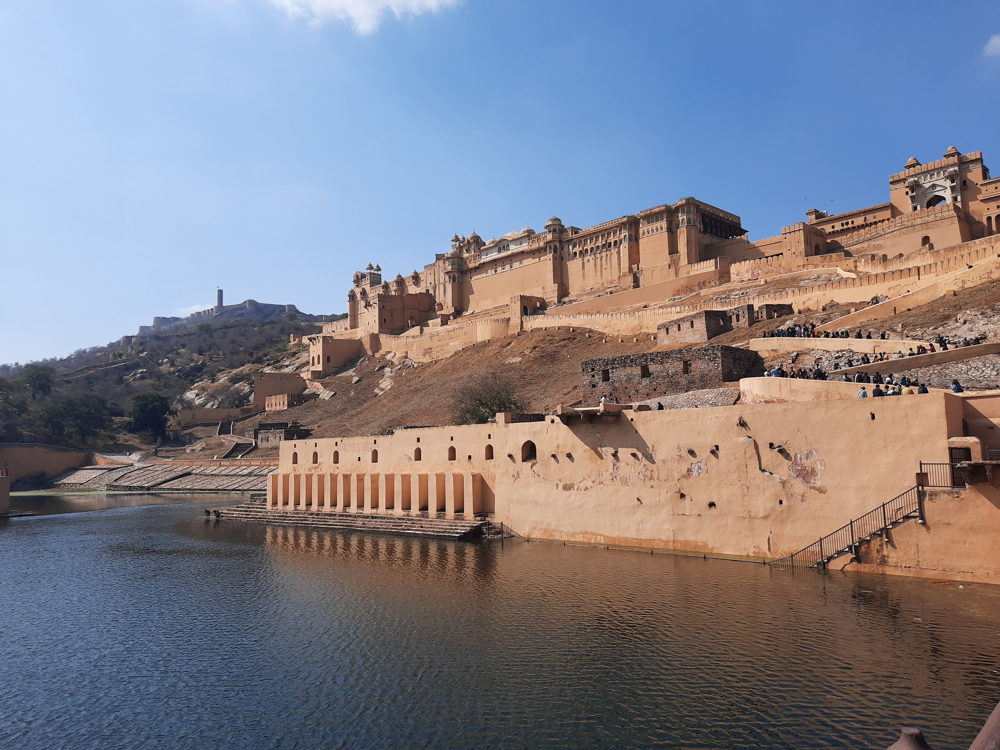

Go Back
Jaipur

Jaipur is the capital city and largest city in the Rajasthan state of India. The city is home to over 3 million people and is known as the Pink City due to the dominant colour scheme of many of its buildings. UNESCO World Heritage Committee inscribed Jaipur the "Pink City of India" among its World Heritage Sites. The city is also home to the UNESCO World Heritage Sites Amer Fort and Jantar Mantar. You'll find lots of delicious food and interesting sights and activities in Jaipur. Aside from the historic aspect of it there are areas that are very developed and offer modern living amenities. Here are some of my favourite sights to see in Jaipur as well as food and accomodation recommendations.
The Amber Fort is one of the most popular and impressive sights in Jaipur. It's actually about 11 km out of Jaipur in a town called Amer but is easily accessible from Jaipur. It's constructed of red sandstone and marble. The opulent palace is laid out on four levels, each with a courtyard. It consists of the Diwan-e-Aam, or "Hall of Public Audience", the Diwan-e-Khas, or "Hall of Private Audience", the Sheesh Mahal (mirror palace), or Jai Mandir, and the Sukh Niwas. The fort is known for its detailed architecture and it's scenic surroundings which includes Maota Lake. It costs about 6 usd to enter and you can also get headphones and a little audio player so you can listen to information and history about the fort as you explore around the fort. This is a must see in Jaipur.
Jal Mahal which translates to Water Palace is a palace located in the middle of Man Sagar Lake in Jaipur. The palace was originally built in 1699; the building and the lake around it were later renovated and enlarged in the 18th century by Maharaja Jai Singh II of Amber. It showcases the traditional Rajput style architecture which is common in the Rajasthan state. It's a very picturesque sight and is easy to stop by and see free of charge on your way back from the Amber Fort.
Panna Meena Ka Kund is a historic stepwell & rainwater catchment known for its symmetrical stairways which are pictured below. This tourist site is lesser known than the last two places on my list and is a very fascinating addition to an itinerary. It also only takes about 10-15 minutes to visit and is very near the Amber Fort. I would recommend visiting these first three sights I mentioned on the same trip as they are nearby each other and don't take very long except for the Amber Fort. Surrounding the site are historic buildings and the town itself all nestled between the surrounding hills.
The Hawa Mahal is a palace in the city of Jaipur, India. Built from red and pink sandstone, it is on the edge of the City Palace, Jaipur, and extends to the Zenana, or women's chambers. This is an impressive sight to visit within the city of Jaipur. I only briefly saw it from the outside while in Jaipur and unfortunately didn't get any pictures. The picture below is from the internet. The structure was built in 1799 by the Maharaja Sawai Pratap Singh, grandson of Maharaja Sawai Jai Singh, the founder of the city of Jaipur, India.
As with most places in India, Jaipur has amazing food. I'd even say it has some of the better food I remember having in India which makes sense as it's such a large city with a diverse range of cuisines. Aside from all the favourite like chicken tikka masala, vindaloos, muttonjoshes etc they have some specialties unique to the region. The famous Rajasthani curry, Gatte ki Subji, Mangori, Ker Sangari, Pakodi, are all the traditional dishes you can find in Jaipur. There are many rooftop restaurants that offer great views of the Amber Fort and other interesting sights. One such restaurant that I highly recommend is Hawkview restaurant. The food was some of the best I had in India and was maybe the best chicken tikka masala I've ever had. It's a great place to watch the sunset over the Amber Fort and the impressive hills surrounding the city. There are also many interesting and delicious street foods you can try throughout the city as well. Due to it's size and international influence you'll find many common fast food chains such as Dominoes Pizza and KFC. Many other cities and areas in India don't have this so it can offer a bit of homely comfort food for many western tourists. Jaipur won't disappoint for food.
Back when I visited Jaipur I was still staying mostly in hostels and I chose Hoztel Jaipur. This was probably my favourite accomodation I stayed in all of India. The atmosphere was much more social than many other hostels I experienced and the owner and staff were very friendly and organized. The beds were comfortable and it was a great place to hang out. I recommend staying here if you are travelling in hostels.